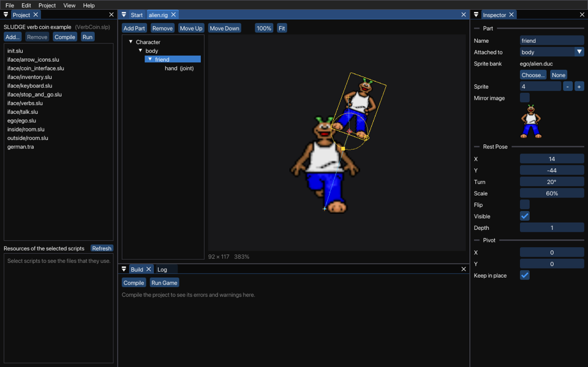

A Composite Character is a character made of parts, like a puppet: a body, a head, a pair of arms, each with a sprite of its own. You could build one in a script with addPart, guessing the numbers and running the game again and again until the head sits on the shoulders... or you could use the Character Creator, and see what you're doing.
What you make here is a rig: the parts, which part hangs from which, and how the character stands when nothing moves it, its rest pose. Once you have a rig, the Animation Editor makes it move. This is how it looks with a man in a suit, one arm turned and selected, and his legs locked:

On the left are the parts, as a tree: each part is under the part it hangs from, and at the top is Character, the character itself. In the middle is the character in its rest pose, and the Inspector on the right shows the part you select. Click a part in the tree, or its sprite in the picture, to select it. With nothing selected, the Inspector shows the rig, and how many parts it has.
To open a rig (a .rig file), choose Open... from the File menu. To start a new one, choose New from the File menu, and then Rig. Save it in the folder of your project, or in a folder inside it, so that the compiler can find it.
Roll the mouse wheel over the picture to zoom in and out, or press Ctrl+= and Ctrl+-. 100% (Ctrl+1) shows the sprites at their real size, and Fit (Ctrl+0) fits the whole character in the window. (On macOS, use Command instead of Ctrl for these.) To look around, drag with the middle or right mouse button, or hold Space and drag.
Add Part adds a part to the selected part, or to the character itself when nothing is selected. Give it a name in the Inspector, under Name. Clips and scripts find a part by its name, so every part of a rig needs a name of its own.
You can rename a part whenever you like. A rig knows which clips were made for it, even when you rename or move the rig's file, so when you rename a part, the editor renames it in those clips too, and tells you how many it changed. Save them along with the rig, otherwise the clips go on looking for the old name.
Remove takes the selected part away, and everything hanging from it goes too (an arm without its hand would look odd anyway). Delete or Backspace does the same, and Undo (Ctrl+Z, or Command+Z on macOS) brings the lot back.
To hang a part from another part, drag it in the tree onto that part, or choose the part in the Inspector's Attached to. The part stays where it is on the screen, but from then on it moves, turns, scales and flips with its new parent. The arrow buttons (Move Up and Move Down) change the order of the parts that hang from the same part. Parts of the same depth are drawn in that order, the first one first, so behind the others.
In the Inspector, Choose... picks the sprite bank of the selected part, and Sprite the number of the sprite in it. You can also drop a sprite bank (a .duc file) onto the window: the part keeps its sprite number if the new bank has that many sprites, and gets sprite 0 if it doesn't. Mirror image shows the sprite mirrored, without mirroring the parts hanging from it.
None takes the sprite away, and the Sprite bank row then says "None (a joint)". A joint draws nothing, but other parts can hang from it, and a clip can give it a sprite later, which is just the thing for whatever the character holds in its hand. Joints show as crosses in the picture, and as (joint) in the tree.
The rig keeps the names of its sprite banks as seen from the folder of your project, which is how the compiler finds them. Without a project open, they're seen from the folder of the rig.
Drag a part in the picture to move it. Where you drop it is where it hangs from its parent: its origin. Position, under Transform in the Inspector, is the same place in numbers, measured from the parent's origin in the parent's pixels: +X is to the right, and +Y is down. The lines between the parts show which hangs from which, from each part's origin to its parent's.
The selected part has a ring around its origin. Drag the round knob on the ring to turn the part, and the parts hanging from it turn with it. Rotation in the Inspector is in degrees, clockwise.
To scale the part, drag one of the small yellow squares on the corners of its sprite's box. Normally a part's X and Y scale together, so it keeps its shape. Click the lock after Scale in the Inspector to let them scale apart: squares then appear in the middle of each side too, to make the part only wider or only taller. Click the lock again to scale them together again, and Y then takes the scale of X. Scale is in percent, along the part's own axes, so it turns with the part. The parts hanging from it scale with it, and a part hanging from one that's been stretched sideways gets stretched along with it, so it may end up looking a bit skewed.
Flip mirrors the part and the parts hanging from it. Turn Visible off to hide the part, and the parts hanging from it go with it.
In the picture, positions snap to whole pixels, angles to whole degrees and scales to whole percents. If you need something in between, type it in the Inspector.
A part turns and scales around its pivot, which is also its origin. Normally that's the hotspot of its sprite, which you set in the Sprite Bank Editor. That's fine until you have an arm whose hotspot is in its middle, and it spins like a propeller instead of swinging from the shoulder. Rather than changing the sprite bank, which other parts or characters may be using too, give the part a pivot of its own.
Drag the red circle at the selected part's origin to move its pivot, or type it under Pivot in the Inspector, in the sprite's pixels from its hotspot. Center puts the pivot in the middle of the sprite. With Lock sprite position on, the sprite and the parts hanging from it stay where they are on the screen, and only the point the part turns around moves.
Modulate and Self Modulate give a part a colour. Click either one to choose it, with its red, green, blue and alpha (opacity) in percent, from 0 to 200%. White, 100% of each, leaves the sprite as it is: less darkens, tints or fades it, and more brightens it.
Modulate colours the part and the parts hanging from it, multiplied by their own colours. Self Modulate colours the part only, so a character can blush without its hands turning pink. Clips can change both (see the Animation Editor).
Which arm is in front? That's what Depth is for. The higher the number, the nearer you the part is drawn, so the arm behind the body gets a lower depth than the body. Depth only sorts out the parts of this one character: where the character stands among the other characters still depends on where it is on the screen, as always. A clip can change the depth of a part while it plays, for when the character turns round.
Click the lock at the end of a part's row in the tree to lock the part. A locked part can't be selected, moved, turned or scaled: its name is dimmed, and a click on it in the picture selects the part underneath instead. That saves a lot of frustration when parts lie on top of each other, such as a hand in front of the body. Click the lock again to unlock it.
Character has a lock too, for the character itself. Each lock is for its own part only, so the parts hanging from a locked part can still be changed. Locks are saved with the rig, but they only matter in the Character Creator: they make no difference in the game.
Load the rig in your scripts with loadRig, give it to a character with setCharacterRig, and make it move with the clips of the Animation Editor:
objectType ego ("Ego") {
}
sub init () {
addCharacter (ego, 320, 400, loadClip ('ego/stand.clp'));
setCharacterRig (ego, loadRig ('ego/ego.rig'));
}
SLUDGE and this SLUDGE documentation are copyright Hungry Software and contributors 2000-2026